Skills
Technologies and tools I've worked with across projects — and can quickly pick up when the job calls for it.
I'm a Full Stack Developer (Front-End focused) with over 8 years of experience delivering web and mobile projects. I specialize in designing exceptional user interfaces, developing robust business logic, and maintaining production systems. I love bringing ideas to life through clean, readable, and highly performant code.
I'm a passionate Full Stack Developer specialized in Front-End development with a strong focus on creating exceptional digital experiences. I care deeply about user experience, pixel-perfect design, and writing clean, readable, highly performant code.
My journey as a developer began back in 2013, and since then I've continued to grow and evolve, taking on new challenges and learning the latest technologies along the way. Over 6+ years working professionally, I've delivered 15+ web and mobile projects across industries — from healthcare dashboards and e-commerce platforms to 3D visualization tools and cross-platform mobile apps.
I am very much a progressive thinker and enjoy working on products end to end, from ideation all the way to production deployment. I thrive in remote, English-speaking teams and I'm comfortable owning features from design handoff to ship.
When I'm not in full-on developer mode, you can find me exploring new tech, tinkering with local LLM deployments, or contributing to internal tooling projects.
Finally, some quick bits about me:
Languages:
I'm available for freelance or full-time opportunities — feel free to reach out and say hello!
Technologies and tools I've worked with across projects — and can quickly pick up when the job calls for it.
Here is a quick summary of my most recent experiences:
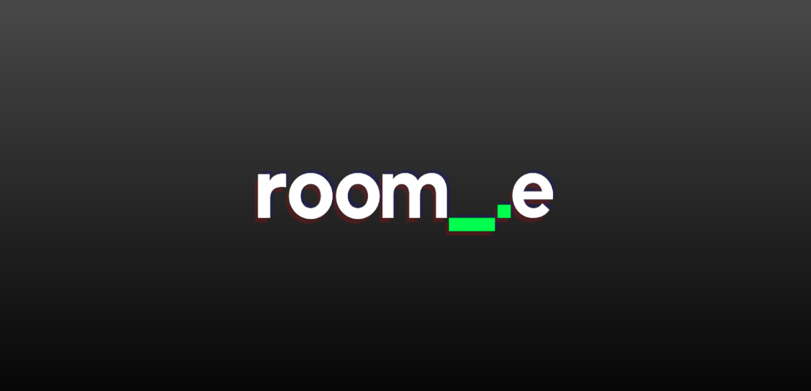
Roomie IT · Remote
▹ Construction of components and project structure using ReactJS-Vite as a base.
▹ State management with Redux and UI styling with Tailwind CSS.
▹ Building scalable and reusable component libraries from design specifications.
Shockoe | Mobile by Design · Remote from Mexico
▹ Worked on 15+ web and mobile projects for clients and internal tools.
▹ Maintained legacy systems (Smartbox), built dashboards/admin portals (ThroneLabs, UNOS).
▹ Developed CMS/e-commerce platforms (USQBC, Foxwoods, Pet Paradise).
▹ Delivered 3D visualization tools (Breadvan, UNOS) and cross-platform apps (Hy-Vee, Shopmonkey).
Creatools · Colima, Mexico
▹ Contributed to the development of a school administration system.
State Government Administrative Complex · Colima, Mexico
▹ Supported development and maintenance of institutional systems: SIMAVE, SICOP, SIGECOL, SICEL.
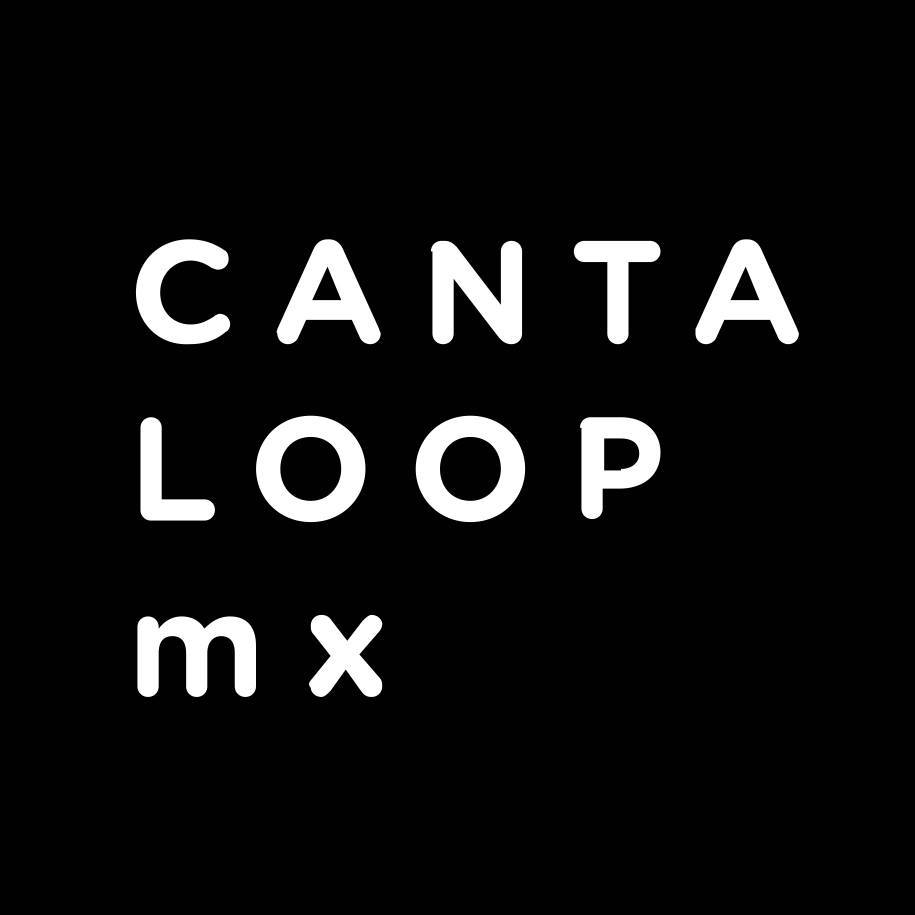
CantaloopMX · Colima, Mexico
▹ Developed platforms: e-Transversalidad, Mexico towards equality, Colima en colores.
▹ Built interactive UIs with ReactJS and managed state with Redux.
Surtidora de Ferretería y Materiales · Tecoman, Colima
▹ Built internal tools in VB.NET/ASP.NET integrated with SAP Business One.
▹ Created reports, dashboards, managed SQL databases, and supported end users.
A selection of projects I have had the opportunity to work on throughout my career:
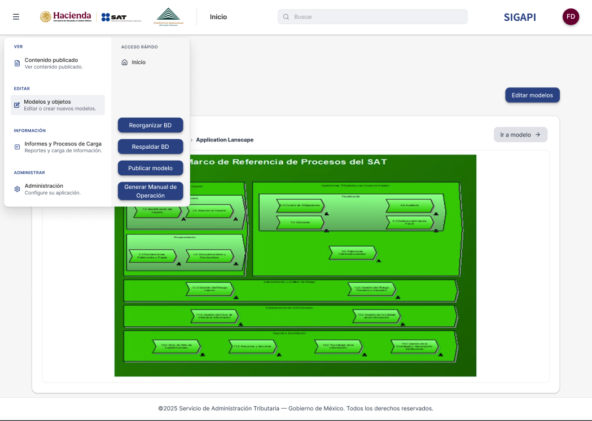
As part of a mid-sized cross-functional team at RoomieIT, I'm currently contributing to SIGAPI, an administrative process modeling tool based on BPMN methodology. I work on the interactive diagram editor and viewer using React-Vite and Redux, helping institutions document, visualize, and analyze their business processes.
I was part of a small team at Shockoe working on the front-end rebuild of Foxwoods Resort Casino's public website — one of the largest resort casinos in the world. I contributed to developing Twig templates, custom Drupal modules, and Tailwind-powered components for a consistent, high-performance experience for thousands of daily visitors.
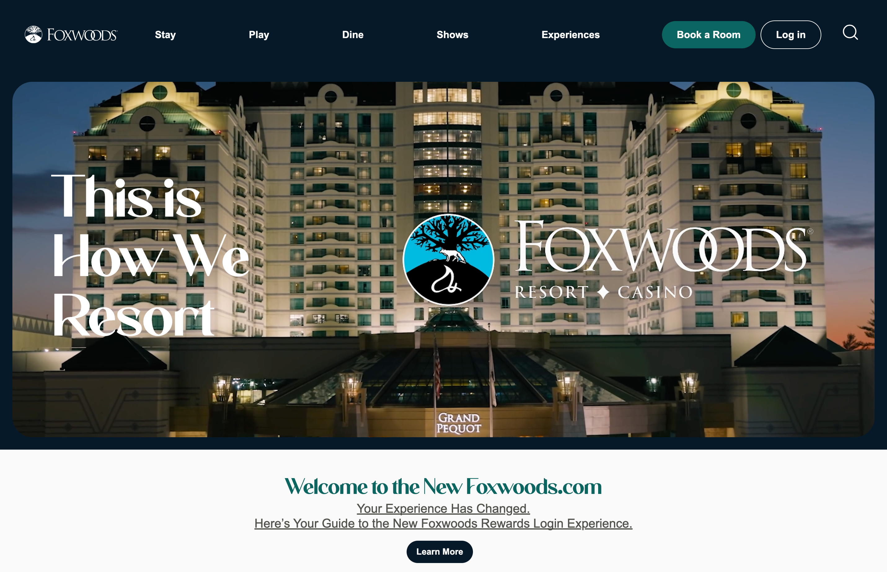
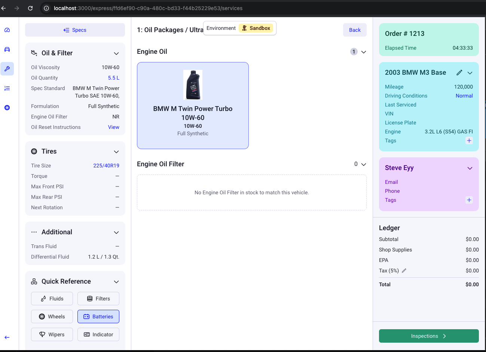
As part of a small team at Shockoe, I helped build this vehicle intake wizard for automotive shops. I worked on the multi-step form flow with Next.js and contributed to the back-end data layer using Prisma and CockroachDB — collaborating closely with the team to deliver a production-ready, scalable solution for shop owners.
I was part of a small mobile development team at Shockoe that built this grocery shopping app with scheduled delivery for Hy-Vee, a major Midwest supermarket chain. I contributed to building key screens in React Native and worked on consuming the GraphQL product catalog from the front-end, as well as features related to real-time cart and order scheduling.


I was the sole developer responsible for both the front-end and back-end of this innovative MVP prototype for UNOS, bringing 3D organ visualization directly into the browser. Using Three.js within an Angular app, I built the 3D viewer and the back-end integration layer — while a separate developer handled the native iOS organ scanner that fed data into the system.
As part of a small team at Shockoe, I worked on this dynamic form portal built for UNOS, enabling transplant programs to submit detailed program data through complex, multi-step form flows. I contributed to implementing conditional field logic, form state management, and validation for life-critical transplant program assessments.

As part of a small team at Shockoe, I contributed to building this mission-critical dashboard used by UNOS (United Network for Organ Sharing) to track organ transplant logistics in real time. I worked on data visualization components and real-time status interfaces that healthcare professionals rely on to coordinate organ allocation across the country.
I provided support and maintenance for the WordPress-based admin portal of Daycon, a construction company. My work focused on resolving bugs, addressing legacy JavaScript conflicts, and delivering small feature updates — keeping the platform stable and functional.
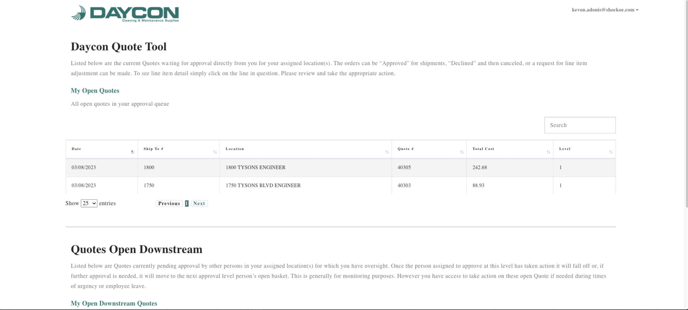

As part of a small team at Shockoe, I helped integrate Strapi as a headless CMS for Activation Capital, a business development organization. I worked on the ReactJS front-end connected to Strapi's REST API, enabling the marketing team to manage page content and announcements independently without developer involvement.
I participated in both the web and mobile development efforts for this reservation platform for Pet Paradise, a national pet care services chain. As part of the team, I contributed to features across both platforms — including booking flows and user portal components — using React Native for mobile and ReactJS for the web version.
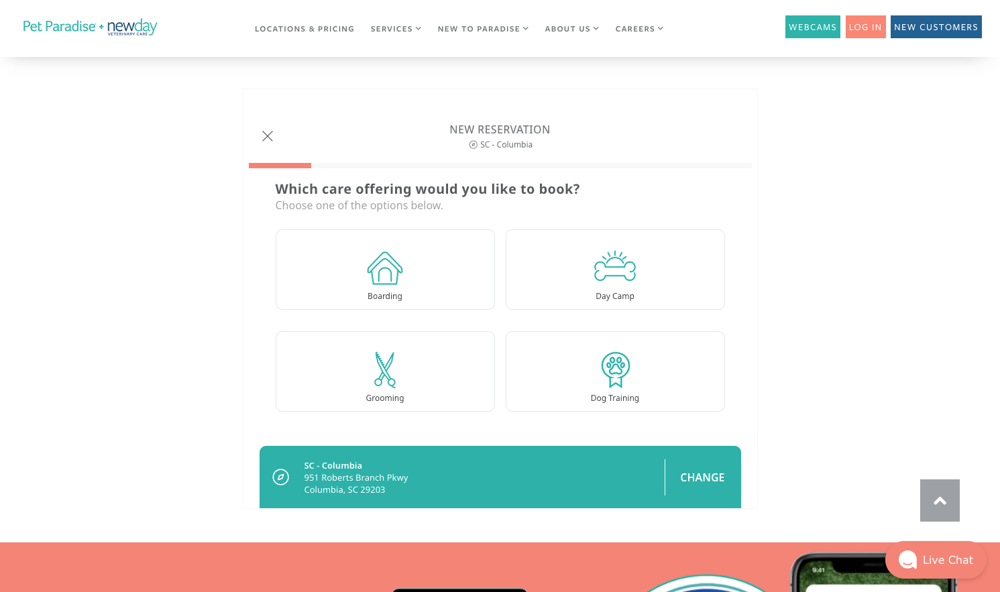
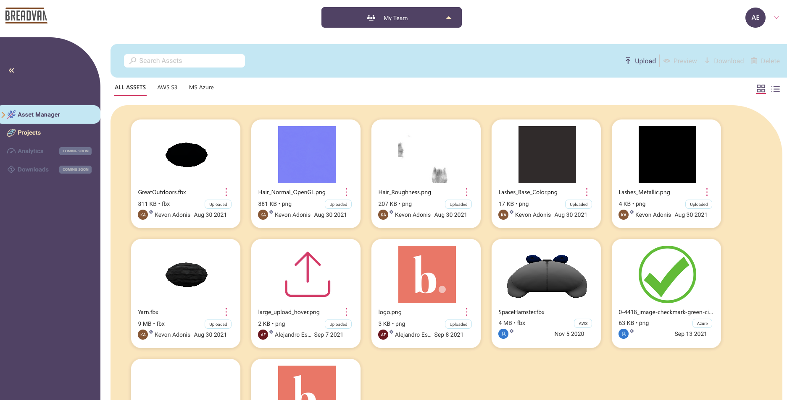
As part of a small team at Shockoe, I contributed to the front-end of this SaaS platform for 3D object management. I worked on the component structure, helped implement the interactive Three.js viewer with scene controls, and contributed to the state management layer — enabling users to upload, transform, and inspect 3D models in the browser.
I acted as the technical lead for a Spanish-speaking development sub-team, coordinating efforts to port this beauty shopping app from iOS to Android using React Native. Beyond leading the team, I personally contributed to solving key platform-specific challenges — resolving rendering and navigation issues to achieve a successful Play Store release.
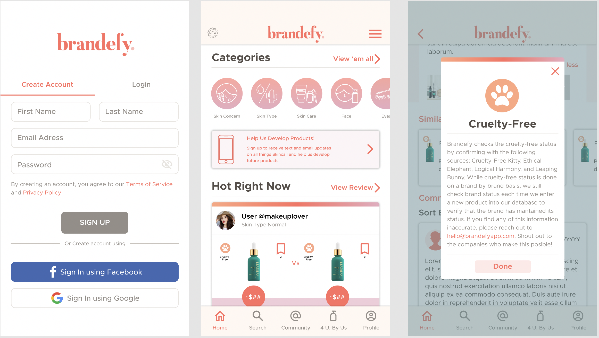
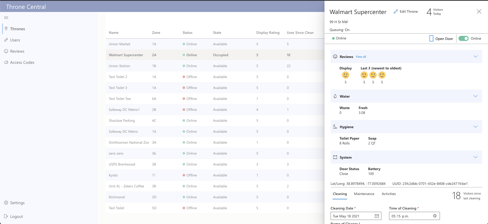
As part of a small team at Shockoe, I contributed to both the admin web dashboard and the React Native companion app for ThroneLabs, a facility management platform for real-time restroom occupancy tracking. I worked on role-based access views, live status indicators, and data sync between the mobile and web clients.
I provided updates and front-end support for MiAlmacenero, a social platform that connects consumers with local neighborhood stores. My involvement included improvements to the store locator, contact forms, and general front-end maintenance — helping keep the site functional and up to date for its users.
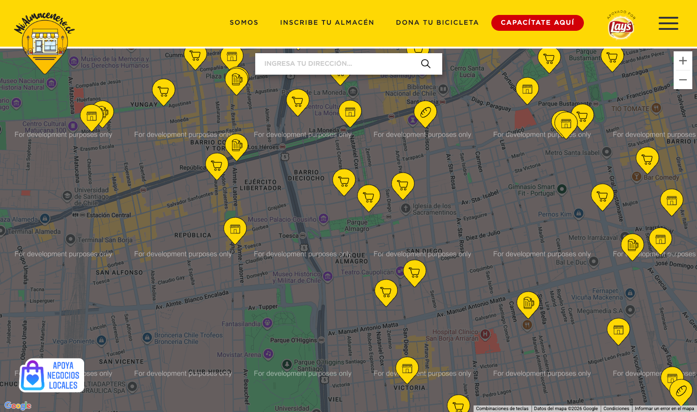
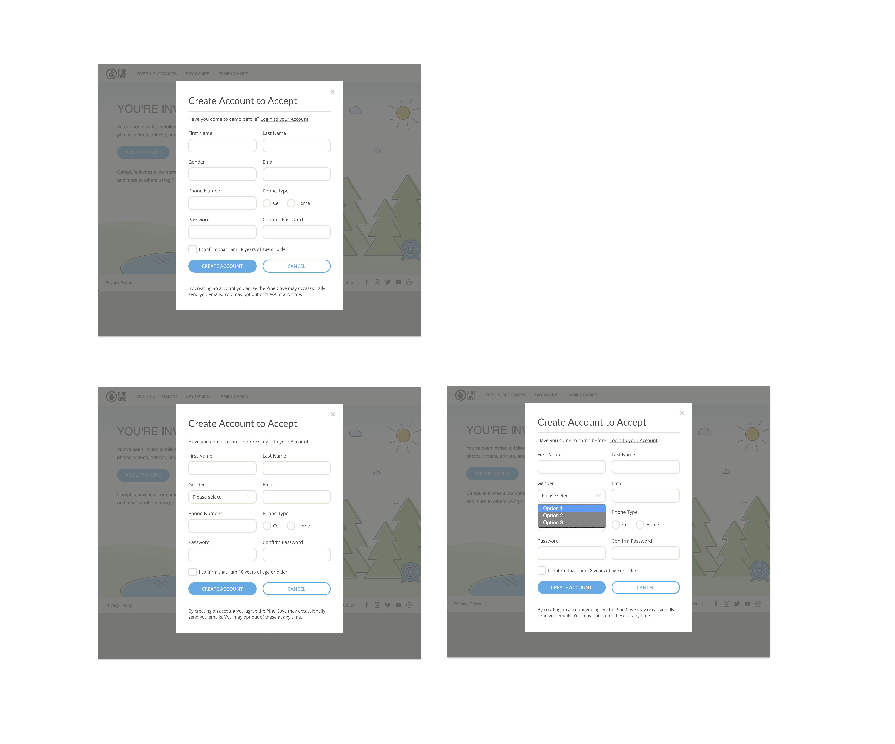
I was the sole developer responsible for building this single-page application for PineCove summer camp, enabling parents to access their children's photos and videos securely. I integrated AWS S3 for scalable media delivery and built a clean, intuitive UI designed to be frictionless for non-technical users.
I served as the technical lead for a Spanish-speaking development sub-team on this WordPress-based informational portal for the US-Qatar Business Council. In addition to coordinating the team's work, I personally contributed to building custom themes and plugins, ensuring the CMS was accessible for non-technical content editors.
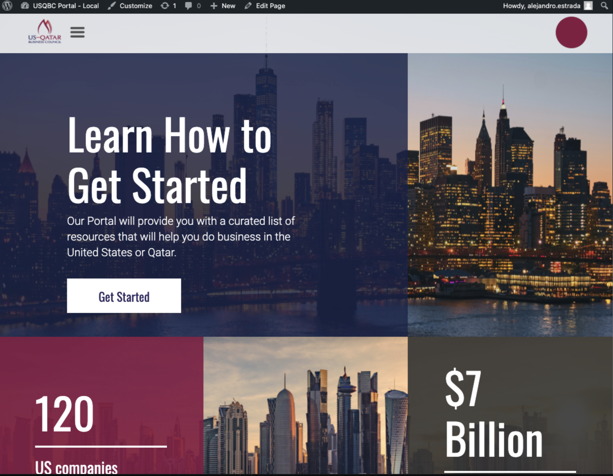
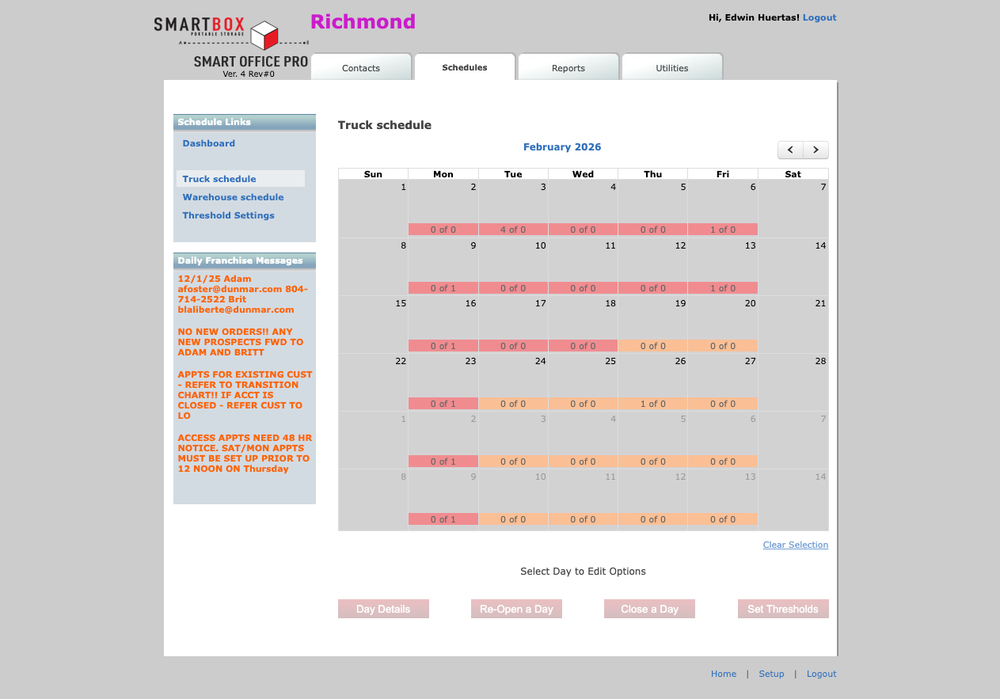
I was the sole developer responsible for maintaining and evolving this legacy platform over several years at Shockoe. I performed a PHP 8 migration, refactored critical modules, and resolved longstanding bugs — keeping a 10-year-old production system stable and functional. I also continued supporting the platform for 6 months after my contract ended, until the project was eventually deprecated.
I worked on the front-end of Misati's corporate website as part of a small team, contributing to the rebuild of a dated web presence into a clean, brand-aligned experience. I built Angular components backed by an SQL data layer and used SASS to deliver a consistent visual identity across all pages.
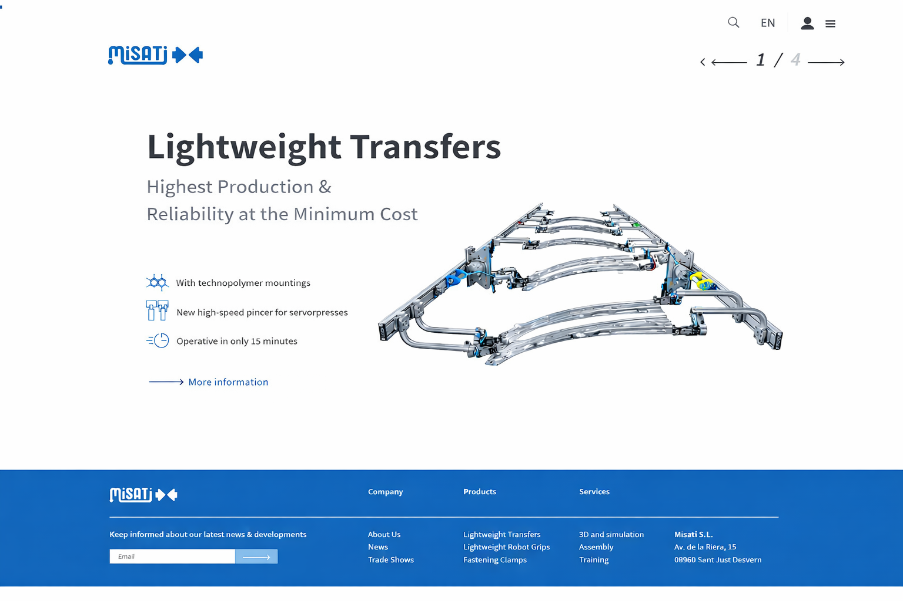
What's next? Feel free to reach out to me if you're looking for a developer, have a query, or simply want to connect.